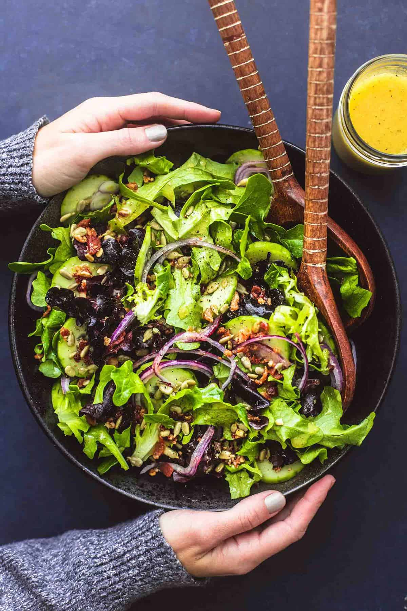

Double Chocolate Chip Cookies
Origin
Michigan
Source
Family recipe
Category
Dessert

The star of the show in the recipe are the chocolate chips.
Ingredients
- Unsalted Butter
- Granulated Sugar
- Packed light or dark brown sugar
- Large egg
- Pure vanilla extract
- Semi-sweet chocolate chunks (melted)
- All-purpose flour
- Natural unsweetened cocoa powder
- Baking soda
- Salt
- Semi-sweet chocolate chunks
Recipe Steps
- In a mixing bowl, cream together the butter, granulated sugar, and brown sugar
- Add the egg and vanilla extract and beat well
- Add the melted chocolate
- In a separate bowl, combine the flour, baking soda, cocoa powder, and salt
- Combine the wet and dry ingredients
- Add the unmelted chocolate chunks
- Form 15 cookies and place on a baking sheet
- Bake for 12 to 13 minutes at 350 degrees
Chocolate Chip Banana Bread
Origin
Michigan
Source
Chocolate Chip Banana Bread Recipe
Category
Dessert

This is a tried-and-tested recipe that I have used numerous times for making the perfect chocolate chip banana bread! Not only does it help utilize the bananas that have slowly overripened at the back of the fridge, it ends up creating an incredibly delicious, and relatively healthy, dessert.
Ingredients
- Cooking spray
- 2 cups (240 g) all-purpose flour
- 1 tsp. baking soda
- 1/2 tsp. kosher salt
- 1 large egg plus 1 egg yolk
- 1 cup (200 g) granulated sugar
- 1/2 cup (1 stick) unsalted butter, melted
- 1/4 cup sour cream
- 1 tsp. pure vanilla extract
- 3 ripe bananas, mashed
- 1/2 cup chopped toasted walnuts
- 1/2 cup semisweet chocolate chips
Recipe Steps
- In a mixing bowl, cream together the butter, granulated sugar, and brown sugar
- Add the egg and vanilla extract and beat well
- Add the melted chocolate
- In a separate bowl, combine the flour, baking soda, cocoa powder, and salt
- Combine the wet and dry ingredients
- Add the unmelted chocolate chunks
- Form 15 cookies and place on a baking sheet
- Bake for 12 to 13 minutes at 350 degrees
Simple Tossed Salad
Origin
American
Source
Category
Salad
It’s hard to resist this salad’s simplicity and, okay, also the bacon! Who can resist that? And the best part is, you can add or subtract just about anything you like and make this simple salad anything you want.
Ingredients
- 5 cups loosely packed mixed greens - or any favorite lettuce
- 2 tablespoons shelled sunflower seeds
- ¼ cup crumbled bacon - or bacon bits
- ¼ red onion - thinly sliced
- 1 cucumber - peeled and thinly sliced
- ¼ cup Dijon mustard
- ¼ cup honey
- ¼ cup apple cider vinegar
- 1 teaspoon salt
- ¼ teaspoon black pepper
- ¼ cup oil - I use extra virgin olive oil
Recipe Steps
- Combine dressing ingredients in a jar, cover, and shake vigorously to combine.
- In a large bowl, combine mixed greens, sunflower seeds, bacon, red onions, and cucumbers.
- Just before serving, add dressing to taste and toss to combine.
- Serve immediately after tossing with dressing.